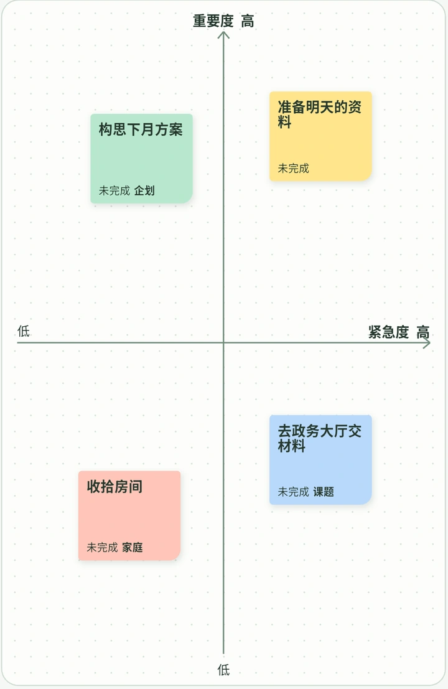
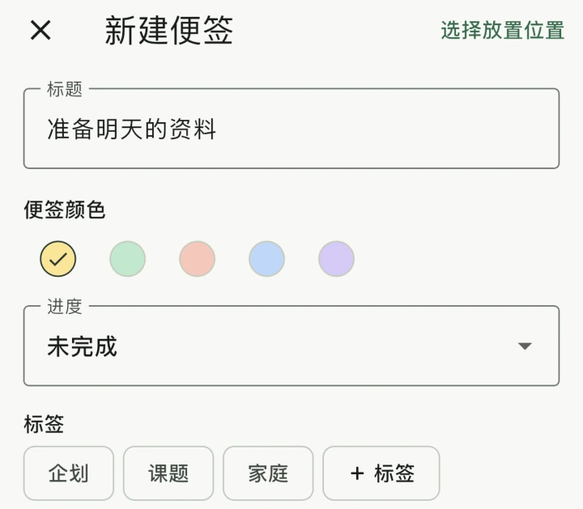
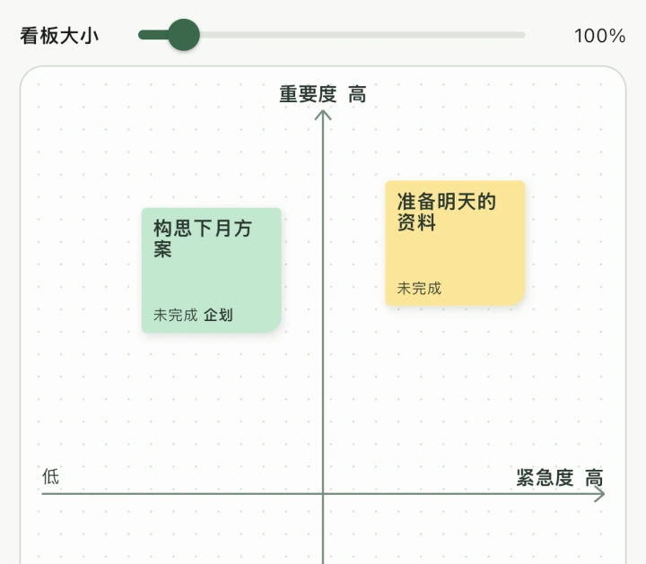
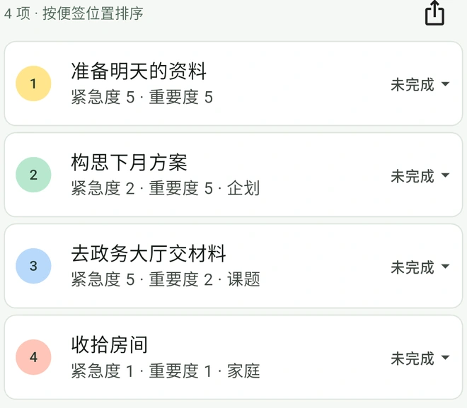

贴上便签，决定下一步做什么
-
写下要做的事
比如「准备明天的资料」。脑子里的事，一件写在一张便签上。

-
紧急的往右放，重要的往上放
明天要用的资料可以放在右上方，下个月的重要方案还有时间，可以放在左上方。把便签放在一起比较，再调整位置。

-
从清单最上面开始做
打开待办清单，任务已经按便签的位置排好顺序。开始处理或做完时，可以直接更新进度。

计划变了，挪一下便签
比如，汇报提前到明天。把「完成汇报资料」的便签往右拖，待办清单里它就会排到「提交报价」前面。便签只写一次，清单顺序会自动更新。
原来的待办顺序
- 提交报价
- 完成汇报资料
移动便签之后
- 完成汇报资料
- 提交报价
工作、生活和学习都用得上
-
工作
把快到期的汇报资料和需要提前准备的项目一起比较。
-
生活
理清今天要办的手续和周末要买的东西。
-
学习
把明天要交的作业和想留出时间做的备考计划放在一起。
常见问题
PetaTodo 可以免费使用吗？
iPhone、iPad 和 Android 版均可免费使用，无需注册账号。应用内可能会显示广告。
待办任务的优先级是怎么排的？
应用根据便签位置，把紧急度和重要度分别换算为 1 至 5 分，按总分从高到低排列。同分时先看重要度，重要度也相同就按创建时间排序。
完成的便签会去哪里？
标记为已完成后，便签会从看板移到待办清单的已完成部分。把状态改回未完成或进行中，便签会回到原来的位置。
便签越来越多，怎么整理？
可以扩大看板，便签大小保持一致。也可以用颜色和标签分类，按标签筛选。每张便签支持带格式的备注和多个附件。
可以分享看板和待办清单吗？
看板可以保存或分享为 PDF、PNG，待办清单可以保存或分享为 CSV、PDF、PNG。也可以将待办清单复制为文本、CSV 或图片。
便签和附件存在哪里？
看板、便签和附件保存在本机，PetaTodo 不会把这些内容上传到外部服务器。